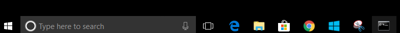
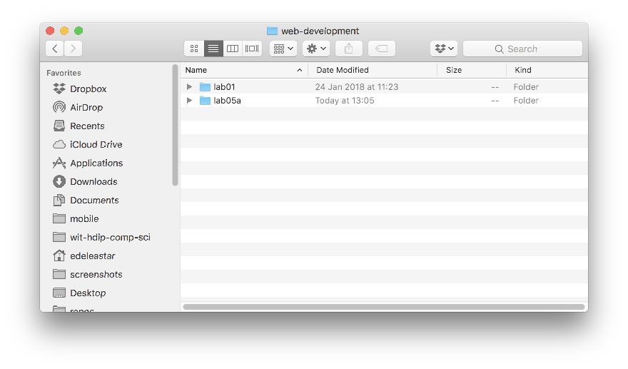

-
Objectives
Install software tools to serve a web site locally and also to deploy the web site to a public web server.
-
Explorer & Command Prompt (Windows)
Explorer
You may be alrady familiar with the windows Explorer application:

In particular, you should get used to undersanding and managing the structure of folders based in on your
C:drive:
Try to replicate the following structure as an exercise:

In the above we have a
course-workfolder, containg aweb-developmentand aprogrammingfolders.web-developmentcontains a folder calledlab05aCommand Prompt
Open a command prompt on Windows. The easiest way to do this is in Windows to type 'cmd' in the Search Box on the Windows start menu:

From now on, you will be using this command line regularly - so we can 'pin' it to the task par for convenience (do this by right clicking):

This should make it appear on the end of the taskbar like this:

Now, you can launch it from the taskbar whenever you need it:

Try out the
dircommand:
Also experiment with closing and reopening the console application.
Finder & Terminal
On Mac, the equivalent of Explorer:

For the Command prompt, install Iterm2:
-
Command Line (Windows)
This is an alternative interface to Windows which it is important to become familiar with. In this window you can type what are sometimes called 'DOS' commands. These commands let you have a finer level of control of your PC, and are particularly important for programmers to master.
Here are some simple commands:
- dir
- list all files in a directory
- cd ..
- change to a parent directory
- cd
<directory name>- change to a specific directory
It is essential that you become adept at these commands, and a few others.
Bear in mind that these commands always have a 'current directory' (a directory is another name for a folder). Try them now and see if you can 'navigate' to your
lab05afolder. If the folder is located as shown here:Then the commands to get there will look like this:

The commands entered above were
cd \cd course-workcd web-developmentcd lab05a
Note in all of the above that the 'prompt' in the command window is always showing the 'current' drive/directory.
Also, if you have a 'space' in your directory (a bad idea generally), then you will have to use quotation marks in the commands. This can get difficulty to type, so in general it is best to adopt the following conventions.
Never use spaces in directory or file names
Never use upper case in directory or file names
If you wish to use readable multiple words for a directory or file name, separate the words with '-'. e.g.
- web-development
- java-projects
Perhaps you might take this opportunity to adjust your workspace and projects to adopt the above conventions. If you do, then you will find that using DOS commands to navigate your folders will be considerably easier.
Before going on to the next step, make sure you are comfortable navigating in DOS around the file system, and in particular make sure you can navigate to your web development workspace.
Also, get used to using File Explorer in parellel - keeping an eye on where you are in the folder tree structure.
Finally, this 15 minute tutorial on the DOS command line might be worth skimming:
The Command line we have been touring here has largely been superceeded by a newer application called
Powershell. However, we will stick to the DOS shell here for the moment.Comand Line (Mac)
Commands on the mac as similiar - review this short tutorial here for the basics:
- dir
-
Installing Node.js, Harp.js and Surge
Installing Node (Windows)
We will now install a set of tools to enable us to work with templates in html.
First, install an application called node.js on your workstation:
Download, select and install the
LTSversion (on the left). Accept all defaults during the installation.If the installation was successful, then you will have a new command called
nodeinstalled on your system. You can test it by entering this on a command prompt:node -vThe response should be a version number:
v8.9.4Installing Node (Mac)
On Mac, the procedure is slightly different. You will first to install this tool:
And then install node with this command at the terminal:
brew install node@8Install Harp
If node is installed, then we can install some additional tools. Visit this site:
Install the application harp.js application. The procedure should be relatively straightforward, just enter the this command at the prompt:
npm install -g harpThis is the same for Mac or Windows.
This will take a few minutes. To check if it installed successfully:
harp -VIt should respond with a version number:
0.25.0Install Surge
With node and harp installed - you will need to install:
The simplest way to do this is to open a terminal and enter:
npm install surge -gIf successful, try to get its version:
surge -VWe should get:
0.19.0We now have 2 key commands installed in our workstations:
- harp
- surge
We will use both of these in the remaing steps.
-
Using Harp
Before entering the next few commands, make sure you know EXACTLY where your command prompt session is located in the folder structure. Perhaps you may be somewhere like:
C:\course-work\web-development\lab05a
See the previous step for guidance on this. If you are evey confused as to which folder tour command promot is based in, just enter this command:
dirThis will list the
currentdiretory contents.Using Harp
Once harp installed, then from the command prompt again, you will be able to carry out these commands :
harp init demoThis will respond with:
Downloading boilerplate: https://github.com/harp-boilerplates/default Initialized project at /Users/edeleastar/repos/wit-hdip-comp-sci/web-development/lab05a/demoThen enter:
cd demo harp serverWhich will respond with:
Harp v0.25.0 – Chloi Inc. 2012–2015 Your server is listening at http://localhost:9000/ Press Ctl+C to stop the server ------------Now browse to this url here:
and you should see this page:

To stop 'serving' the page, enter Ctrl-C in the command prompt:
Harp v0.25.0 – Chloi Inc. 2012–2015 Your server is listening at http://localhost:9000/ Press Ctl+C to stop the server ------------ ^C -
Deploying a Web Site using Surge
Create a new project from the command line by entering the following:
C:\course-work\web-development\lab05a> harp init iot-webIn the above note that we are entering the command from the
C:\course-work\web-development\lab05a>folder. On mac this will be slightly different.Remember, make sure to keep an eye on which folder this command is executed from. Opening the folder should reveal these files:
We will use files like these later - but for the moment delete all of these files and replace them with the following file called
harp.json:harp.json
{ "globals": { } }You will need to use Sublime to create this file - and then save it into the new project folder.
If you havent already downloaded it - get the last version of the IoT web site from the last lab:
- Download Archive: https://github.com/wit-computing/iot-web/releases/tag/V07
Unzip the project, and copy the
publicfolder into the iot-web folder you have just created. Youriot-webfolder should look like this:Now we will
servethe web site locally with this command:C:> cd iot-web C:\iot-web> harp server Your server is listening at http://localhost:9000/ Press Ctl+C to stop the serverNotice that the command is executed from within the
iot-webdirectory.Verify that the site is available here:
It should look like this:
Terminate the server again with ^C:
Your server is listening at http://localhost:9000/ Press Ctl+C to stop the server Terminate batch job (Y/N)? y ^C G:\iot-web>From still within the
iot-folder, enter the following command:C:\iot-web> harp compile C:\iot-web> surge ./www Welcome to Surge! Please login or create an account by entering your email and password:Enter credential to create a new account now - be sure to remember the password. Surge will then deploy the site to a public server:
project path: C:\dev\iot-web\ size: 34 files, 2.3 MB domain: dull-pet.surge.sh upload: [====================] 100%, eta: 0.0s propagate on CDN: [====================] 100% plan: Free users: youremail@domain.com IP address: 192.241.214.148 Success! Project is published and running at dull-pet.surge.shThe
domaincan be customised -in the above example 'dull-pet' was generated, you can replace this with something more suitable (but unique, so perhaps include your initials, the current date or something that may not be used by someone else).Open a browser to inspect the running site. This is now deployed and accessible globally!
-
Removing Web Sites from Surge
If you have published a number of sites you may want to recall what domains were generated, or perhaps remove some or all of the published pages.
The various commands are listed here:
To list all web sites:
C:\dev\iot-web>surge list email: youremail@domain.com token: ***************** iot-1.surge.sh dull-pet.surge.sh highfalutin-exchange.surge.sh C:\dev\iot-web>To remove (delete) a site from the server use the
teardowncommand:C:\dev\iot-web>surge teardown highfalutin-exchange.surge.sh email: youremail@domain.com token: ***************** domain: highfalutin-exchange.surge.sh Success - highfalutin-exchange.surge.sh has been removed. C:\dev\iot-web> -
Exercises
See if you can deploy one of your lab projects using surge. Here are the steps:
1: Verify harp & surge installed
Make sure you have the node+harp+surge packages installed on your computer. Open a command prompt and enter
node -v harp -V2: Prepare Project Folder
Create a new (empty) folder to contain your project. Into this folder place the following file:
harp.json
{ "globals": { } }3: Copy Project Files
Place your entire project into a folder called
publicinside this project folder (as we did in step 05).4: Run the Server
From the command line, enter the command:
harp server5: Verify Site
Verify that your side it available on:
- <http://localhost:9000/>6: Publish Site
Terminate the server with ^C, and then enter:
surgeThis will deploy the web site:
project path: G:\dev\iot-web\ size: 34 files, 2.3 MB domain: XXX.surge.sh upload: [====================] 100%, eta: 0.0s propagate on CDN: [====================] 100% plan: Free users: youremail@domain.com IP address: 192.241.214.148 Success! Project is published and running at XXX.surge.sh7: Verify Deployment
Verify that the site is available on the domain. You will have the opportunity to change the domain
XXX8 : Review Relative vs Absolute paths
You may have had relative paths in your html files:
<a href="../stuff/mupage.html"> my stuff </a>or even more confusing:
<a href="../../stuff/mupage.html"> my stuff </a>These type of references can all be replaced with:
<a href="/stuff/mypage.html"> my stuff </a><a href="/stuff/mypage.html"> my stuff </a>Try this now - one link at a time to make sure it works.